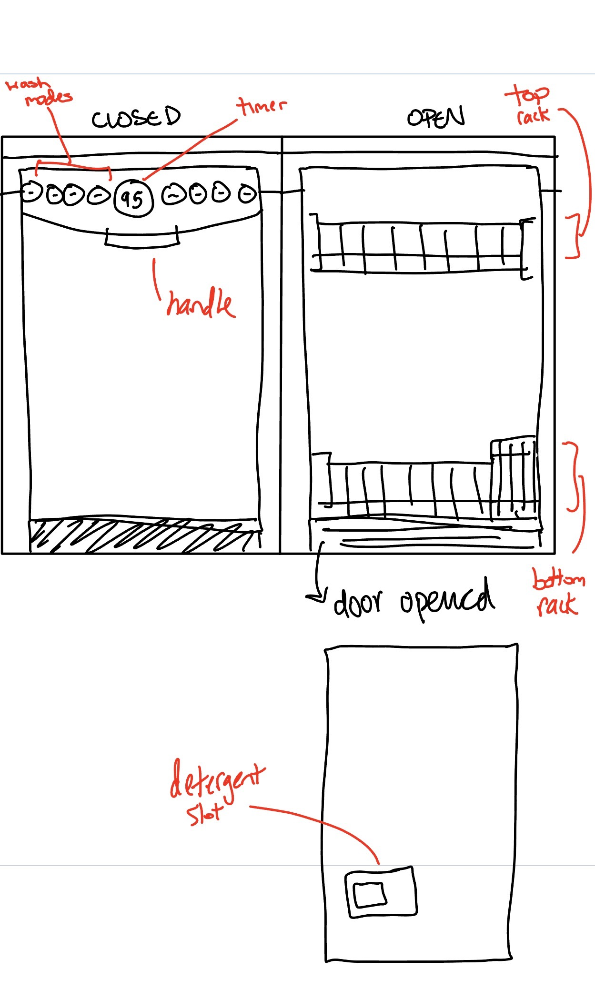

In this project, I construct two personas of users of my dishwasher with corresponding empathy maps based on data collected from multiple observation sessions in my apartment's kitchen in Providence. I also present a storyboard depicting the process by which a certain user persona might use my dishwasher.
Dishwashers are used for automatically washing multiple dishes at a time. This dishwasher provides two racks on which the user can place their items. The top and bottom racks are similar, but the bottom rack notably includes a smaller subsection (on the right side) that is used for storing utensils and other similarly-sized items. Once the dishwasher is loaded, detergent must be loaded in the detergent slot on the inside of the dishwasher’s front door. Then, the door can be closed and a wash mode can be selected via the buttons on the top of the front door. The remaining duration of the dishwasher’s current run is displayed at the top center panel of the front door.
I observed consenting users in my kitchen as they used my dishwasher. To summarize my notes:
All five users ended up selecting the same washing mode (“Normal”, a 95-minute cycle). Some users used a single dish detergent pod, while others used a detergent pod as well as liquid dish detergent. In terms of dish placement within the washing machine, I observed a spectrum of behavior. Some users were very meticulous about how they placed their dishes, sometimes taking time to rearrange entire racks in the midst of loading the machine. On the other hand, some users seemed to load the dishwasher with a “first-fit” dish allocation method and did not rearrange dishes after placing them.
All five users were willing to answer a survey conducted after I observed their usage of the dishwasher. In this section, I've summarized their responses to each question.
Q: How often do you typically run the dishwasher in a given week?
- Minimum: 1, median: 3, maximum: 7
Q: How many dishes do you usually place in the dishwasher before you run it?
- All interviewees said they always ran the dishwasher with a full load.
Q: How do you decide where to put certain items in the dishwasher? (e.g., utensils, plates, bowls, pans, etc.)
- One interviewee said that they do it “based on vibes.” I further clarified that they follow the constraints of the racks (more vertical space on bottom rack) as they load.
- Some interviewees load the shorter items (cups, bowls) on the top rack, larger items (plates, pans, larger bowls) on the bottom rack, and utensils in their respective compartments.
- Some interviewees expressed that they just go for the first place that an item will fit, since it saves them the time of having to decide where to put items.
Q: Do you ever decide to handwash certain items rather than loading them into the dishwasher? Why?
- The majority of interviewees said yes, for the following reasons:
- Convenience (it might be too much work to get it to fit in the dishwasher)
- Sometimes dishwasher doesn’t clean entirely, so followup work is necessary
- Some items must be hand washed, or else they’ll stain (e.g. plastic containers)
- Some items don’t fit
- Some items mess up the water’s flow, especially larger ones
- One interviewee said no; “If some items cannot be loaded into the dishwasher, I’ll run a second load.”
Q: What washing settings have you used on the dishwasher?
- All interviewees primarily use the “Normal” setting, which runs for 95 minutes.
- One interviewee said that they’ve used 65 minutes and 95 minutes; they vary their behavior based on how dirty the dishes are.
Using my user observations and interview responses, I developed two personas to describe the ways in which users of my dishwasher perceive the dishwasher in my apartment. I also developed empathy maps for each persona to visually represent the thought processes and behaviors of different types of users of my dishwasher.
Fussy Frank cares a lot about cleanliness, and the dishwasher is a pillar of their cleaning practices. Since rack space in the dishwasher is limited, and the organization of dishes in the dishwasher affects the quality of the wash, Frank spends a lot of time wrangling the rack to enable the most optimal dishwashing experience. They also consider multiple wash modes on the interface in order to ensure that the dishes are properly washed. The Fussy Frank persona represents the subset of users that are very focused on cleanliness and are willing to put the extra effort into getting the most out of the dishwasher.
Speedy Sanford doesn’t put cleanliness first, so they’re not afraid to cut corners in the dishwashing process if it’ll help them get to what they want to do faster. They don't think too much about dish organization or orientation, and instead decide to put dishes wherever they’ll fit first. Their goal is to get the job done, not to do the best job. The Speedy Sanford persona represents the subset of users that does not prioritize cleanliness and see the dishwasher as just a means to an end.
As a final step in the project, I created a storyboard for Fussy Frank's user journey when they use the dishwasher. This storyboard aims to capture the following aspects of Fussy Frank's interactions with the interface: